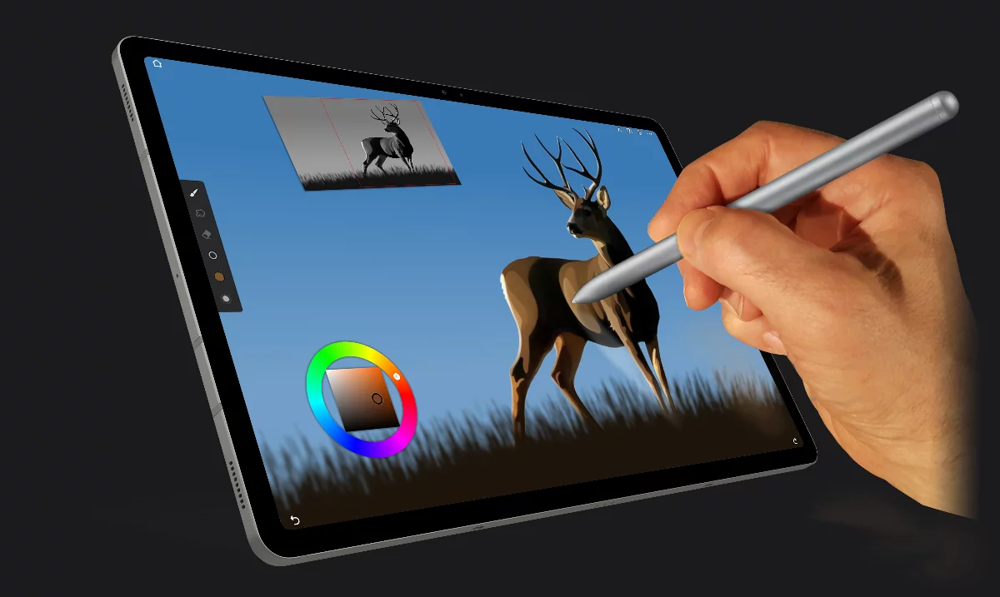
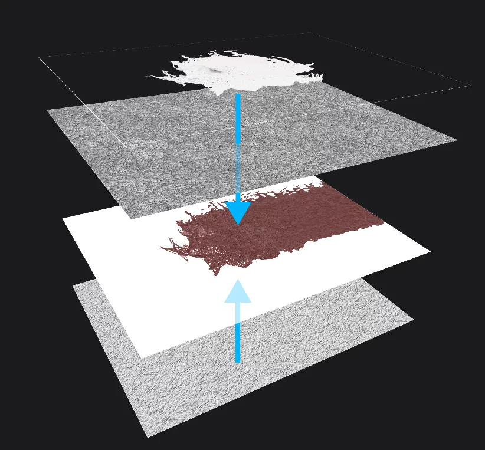

用 Painter 搭一套移动端到桌面的插画流水线
每周要出六张社媒配图和两张产品插画，以前 iPad 画完得导回桌面再修，现在一条链在 Painter 里串到底——从草图到终稿不换软件。
以前的流程：三步切换，两次手动搬运
我每周的固定产出是：公众号头图两张、小红书竖图两张、Twitter/X 横幅一张、产品线稿上色一张。以前的流程是：
- 在 Procreate 里画草图和线稿
- 导出 PSD 到 OneDrive，在 Photoshop 里上色、调尺寸、加字
- 出完图再一张张导回手机预览，不合适又回去改
这条链最大的问题不是慢——而是每切一次软件，决策就得重做一遍。Procreate 里画的线条风格，到 Photoshop 里用数位板重新上色，手感完全变了；社媒尺寸预设得在 Photoshop 里手动裁，一个不小心比例就歪；中间存的 PSD 版本多了，OneDrive 同步偶尔还能把旧版盖新版。
最让我头疼的是产品线稿那一步：从设计稿里导出的 PNG 线稿，得在 Photoshop 里开图层、把线稿锁在最底，然后新建层铺色。动作不复杂，但每次都要把"导入 → 分层 → 锁定 → 新建上色层"这套流程走一遍，两周一次的重复劳动积少成多。
新流程：Painter 插在中间，上下游只留一个入口
Painter 是 Infinite Painter 的移动端插画工具，它的官网上有完整的笔刷引擎介绍，下载也很方便。现在这套链是这样的——全程只在 Painter 里完成，最后导出一次：
第一步：线稿来源
产品线稿还是从设计工具导出 PNG 或 PSD。区别在于，现在打开时直接选"从图片开始画"，PSD 会分层导入，原有的线稿层单独进来，我不用手动拆分。线稿层锁定在最底，新建层直接上色，Paint 模式上色、Erase 模式擦出格的部分，笔刷模式正交于媒介类型的设计在这里特别好用——水彩笔刷切 Erase 会稀释颜料而不是硬擦，适合边缘过渡；炭笔笔刷切 Blend 就是手指擦效果，做柔和阴影不用换工具。
第二步：社媒配图
公众号头图和小红书竖图，我直接选预设尺寸新建。Painter 的预设库按用途分了社交媒体类，Instagram、Twitter/X、YouTube、Pinterest 都有现成的宽高，比例锁定后不用担心裁歪。草图阶段用水彩笔刷快速铺大色块，细节切 Harmony 程序化笔刷做纹理——Shaded 模式扫一遍就是密集阴影线条，LongFur 画人物头发比手动画省十倍时间。

第三步：变换与微调
以前每次换尺寸都要回到 Photoshop 重新构图。现在变换工具四种模式覆盖了大部分需求：Basic 模式等比缩放，Distort 模式调透视把元素拉到合适位置，Warp 模式用网格点拖拽做自由变形——比如把一张横版图的某个角落拉伸填充到竖版比例里，网格线拖几下就好。变换工具栏能直接输入精确坐标和尺寸，调完点确认就固化，不破坏像素结构。
第四步：导出
全部完成后导出一次。Painter 支持 PNG、JPG、PSD 三种格式，Harmony 笔刷生成的纹理是真实像素，导出时不会丢。我通常导 PNG 发社媒，同时留一份 PSD 存档以备后续修改。
最容易断链的两个环节
断链点一：线稿分层导入后，上色层经常画在锁死的线稿层上
这个我栽过好几次。线稿层选"锁定"后，新画的上色层有时候会自动跑到线稿层下面，或者我没注意活动层，直接在锁死的线稿层上画了。Paint 模式只对活动图层生效，画错层的话要么覆盖了不该覆盖的，要么根本没画上去。
解决办法：上色前先点一下图层面板，确认当前活动层是刚新建的空白上色层——我给自己加了一个 checklist，画任何东西之前先看图层缩略图高亮的是哪一层。这个小动作比任何快捷键都靠谱。
断链点二：Harmony 笔刷 Size 参数容易和普通笔刷混淆
Harmony 笔刷没有"笔尖形状"的概念——Size 控制的是线条粗细，不是笔刷的覆盖宽度。刚用的时候我把 Shaded 笔刷 Size 调得和普通笔刷一样大，结果出来的线条太粗太密，整块阴影糊成一团。后来去Painter文档翻了一下才搞清楚，Density 参数才是控制"单位面积里线条多少"的关键，Size 保持在 1~3 的细线条范围，Density 根据需要调到 50~80 之间，Variation 加一点随机变化让线条不死板。

这套流程什么时候划算，什么时候不划算
划算的场景：你有固定的社媒产出节奏，或者需要从线稿 → 上色 → 变换的完整链。Painter 的预设尺寸库直接省掉了手动裁剪那步，PSD 分层导入也让设计稿对接毫无摩擦。加上移动端随时随地能画——通勤路上用手机补完插画的阴影细节，回家在平板上继续，同一个项目文件在不同设备间无缝切换，这是以前桌面端单一工具做不到的。
不划算的场景：纯文字排版、复杂的海报加字、或者需要大量滤镜和特效合成的工作——这些 Photoshop 还是更顺手。Painter 的定位是插画和绘画工具链，它的笔刷引擎和程序化笔刷是核心优势，但不要指望它代替所有设计软件。
省了多少事？
量化一下：以前三步流程里，Procreate 到 Photoshop 的 PSD 转存平均要 5 分钟，Photoshop 手动裁社媒尺寸平均 8 分钟，线稿拆分和图层初始化平均 3 分钟——每次出图少了 16 分钟，每周 6 张就是近两小时。加上中途同步失败、版本盖掉的概率降低，实际节省的时间比数字多。
这套链我跑了一个月，还没遇到真正卡壳的地方——最多是 Harmony 笔刷参数调了两次才满意。如果你也是社媒固定产出或者产品插画外包的路子，可以试试把 Painter 插进去，看看哪一步能替你少一次复制粘贴。用到的这套插画工作流的配套素材和参考配置，分别存在 GitHub、Gitee、GitCode，国内读者用后两个会快不少。